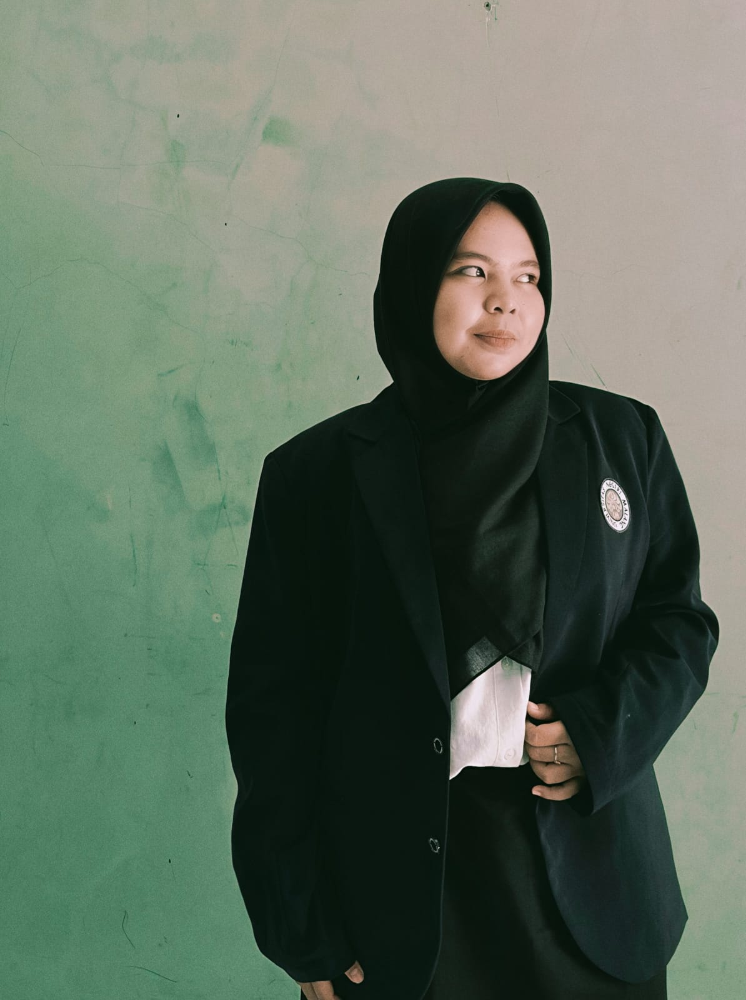

Indana Zulfa
Selamat datang di ruang belajar dan berkarya. Website ini akan mengabadikan seluruh pengalaman selama menjalani program PPG Calon Guru di Universitas Negeri Malang, beserta praktik mengajar di SMPN 25 Malang.
Perjalanan ini bukan sekadar mempelajari seni mengajar, melainkan perjalanan mendalam untuk bertumbuh, beradaptasi, dan menyematkan makna dalam setiap langkahnya.

Tentang Saya
Menemukan Makna dalam Setiap Pengalaman
Saya merupakan lulusan Pendidikan Teknologi Informasi yang sedang menempuh Program PPG Calon Guru dalam bidang informatika. Perjalanan ini menjadi momen penting bagi saya untuk terus belajar dan mengembangkan diri sebagai seorang pendidik.
Menjadi guru bagi saya adalah proses untuk terus belajar dan berkembang. Setiap pengalaman menjadi bagian dari proses untuk memahami pembelajaran dengan lebih baik.
Komitmen Diri
Membangun Diri Menjadi Lebih Berarti
Visi untuk Pendidikan di Indonesia
Berkontribusi dalam membentuk generasi yang berkarakter, berdaya saing, dan adaptif terhadap perkembangan zaman melalui pembelajaran Informatika yang interaktif dan bermakna.
Visi Sebagai Calon Guru
Menjadi pendidik yang profesional, reflektif, dan adaptif dalam menghadirkan pembelajaran yang bermakna serta mendukung peserta didik untuk berkembang sesuai dengan potensinya.
Jejak Karya dan Pengalaman Belajar
Merekam Proses dalam Setiap Perjalanan Pembelajaran
Jejak Karya dan Pengalaman Belajar
Selama mengikuti PPG Calon Guru Informatika, saya memperoleh berbagai pengalaman yang memperluas pemahaman tentang peran guru dan kebutuhan murid. Pengalaman tersebut dituangkan dalam karya dan refleksi yang merekam proses pembelajaran serta perkembangan kemampuan saya sebagai calon guru. Rangkaian tersebut dapat dilihat melalui pengalaman belajar pada Semester 1 dan Semester 2.